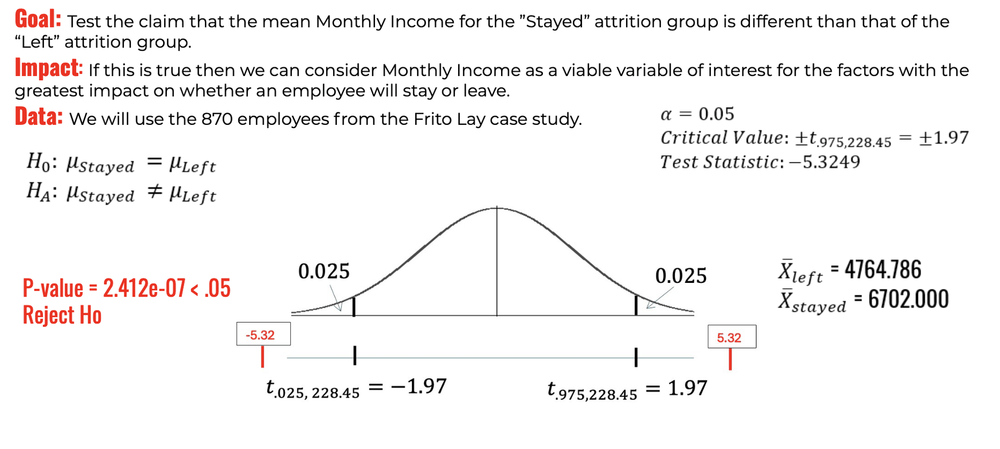

Employee Attrition Prediction: Frito-Lay
Modeling attrition in a Frito-Lay course case study, and choosing the decision threshold around what a missed departure actually costs instead of chasing accuracy for its own sake.
Which employees are likely to leave, and what should the company do about it?
This course case study modeled employee attrition and compared thresholds under asymmetric cost assumptions: a $200 retention incentive and replacement costs of 50%–400% of annual salary. These are scenario inputs, not verified company costs or evidence that incentives prevent departures.
870 employees, and a real income gap between who stays and who leaves
Of 870 employees, 730 stayed and 140 left, an attrition rate of about 16%. Before building any predictive model, I tested whether monthly income actually differed between the two groups, and it did.

A two-sample t-test rejected the null of equal means (t = -5.32, p < .001): employees who left earned $1,220 to $2,654 less per month on average, at 95% confidence.
Cost first, model second
Rather than optimize for accuracy, I set the decision threshold using scenario assumptions on each side, a $200 retention incentive against a replacement cost of 50%-400% of the average $76,683 salary, then compared a Naive Bayes model against a kNN model at their respective cost-optimal thresholds.
kNN cut the projected cost range by more than half
Both models identified Age, Job Role, and Overtime as the strongest predictors. But at their respective cost-optimal thresholds, kNN traded some specificity for a large jump in sensitivity, and that trade-off lowered projected costs under the case study assumptions.
| Model | Threshold | Sensitivity | Specificity | Accuracy |
|---|---|---|---|---|
| Naive Bayes | 0.12 | 77.86% | 62.05% | 64.60% |
| kNN (k = 3) | 0.15 | 94.29% | 68.63% | 72.76% |

Employees who left (red) cluster at low tenure and lower income in both facets, but far more densely among those working overtime, visual confirmation of why overtime ranked alongside age and job role as a top predictor.
What actually mattered
Missing a leaver is far more expensive than a false alarm
The scenario assumes a $200 incentive and replacement costs of 50%–400% of the average annual salary. Threshold recommendations depend on those inputs and on whether retention actions are effective.
Age, job role, and overtime held up across both models
The same three predictors surfaced as the strongest signal in both the Naive Bayes model and the kNN model, these are predictive associations, not established causes of attrition.
Income really is different between the two groups
A t-test provided evidence that employees who stayed earned significantly more per month than those who left, evidence that monthly income is worth watching even outside the final model.
Cost assumptions favored a different operating threshold
kNN's 72.76% accuracy wasn't the highest it could have been tuned for, but a threshold chosen for cost rather than accuracy cut the projected replacement-cost range by more than half versus Naive Bayes.